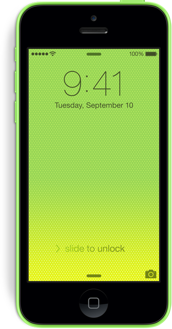
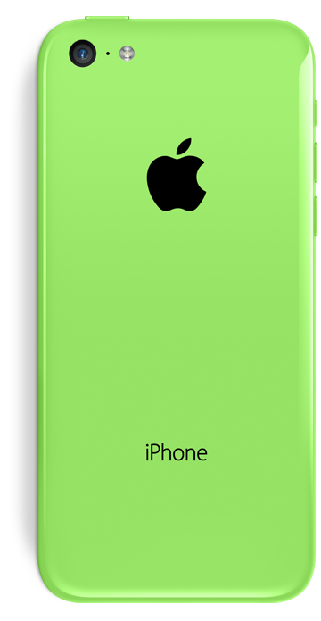
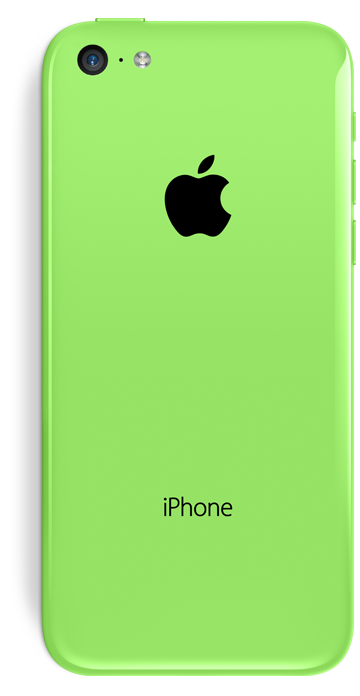

Apple fullPage.js Demo

 


A powerful plugin
fullPage.js callbacks allow you to create amazing dynamic sites with a bit of imagination. This example tries to reproduce the Apple iPhone-5c website animations as an example of what fullPage.js is capable of.


Amazing stuff
Combining fullPage.js with your own CSS styles and animations, you will be able to create something remarkable.Just a demo
This is, of course, just a demo. I didn't want to spend much time on it. Don't expect it to work perfectly in all kind of screens. It has been designed to work on 1180px width or over on modern browsers with CSS3.